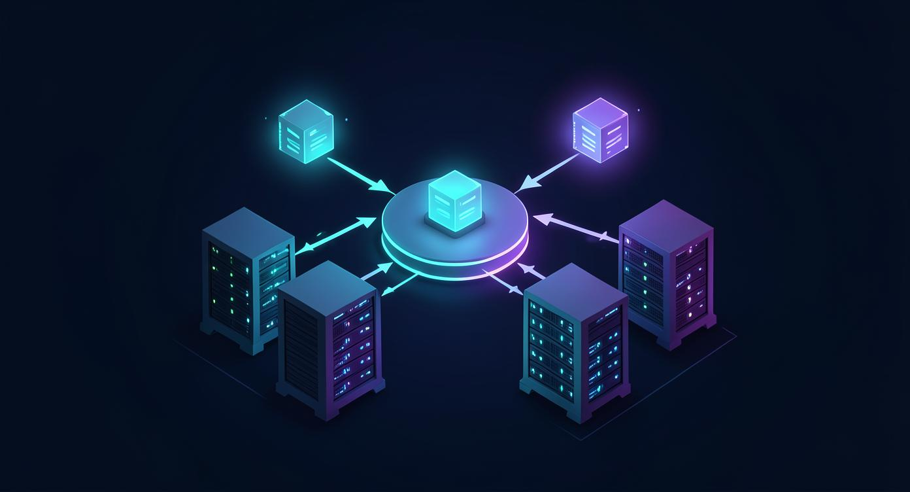
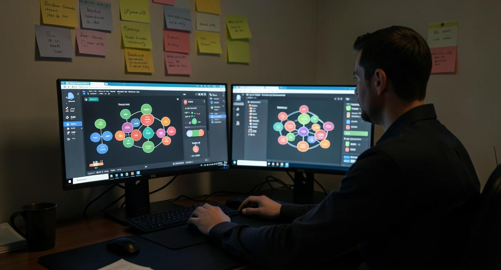
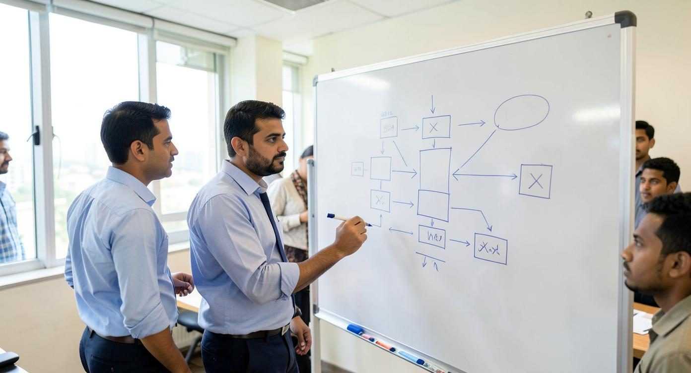

Container Orchestration Kya Hai? Kubernetes, Swarm aur Nomad

एक container चलाना आसान है। दस containers चलाना भी संभव है। पर जब आपके पास बीस services हों, तीन environment हों, और रात में कोई container बंद हो जाए — तब सवाल यह आता है कि उसे दोबारा कौन चालू करेगा, traffic कैसे बँटेगा, और नया version बिना downtime कैसे जाएगा। इसी ज़िम्मेदारी का नाम container orchestration है।
इस आर्टिकल में मैं बताऊँगा कि orchestration क्या करता है, यह अंदर से कैसे काम करता है, Kubernetes, Docker Swarm, Nomad और ECS में क्या फर्क है, छोटी टीम के लिए कब यह ज़रूरत से ज़्यादा हो जाता है, और शुरुआत करते समय किन पाँच गलतियों से बचना चाहिए।
छोटा जवाब: container orchestration एक ऐसा system है जो containers को कई servers पर चलाता, बाँटता और संभालता है। आप बताते हैं कि क्या चलना चाहिए; यह तय करता है कि कहाँ चलेगा, कितने चलेंगे, कब बदलेंगे, और किसी के बंद होने पर क्या होगा।
Container orchestration kya hai
Container एक चलने वाली इकाई है जिसमें आपका application और उसकी dependencies पैक होती हैं। वह एक machine पर चलता है। orchestration उससे एक कदम ऊपर है — यह कई machines को एक साथ जोड़कर उन पर सैकड़ों containers को व्यवस्थित करता है।
इसे ऐसे समझें: container आपका सामान है, orchestration उस सामान को सही डिब्बों में रखने, गाड़ी में लादने और रास्ते में संभालने वाला सिस्टम है। सामान अच्छा होना ज़रूरी है, पर बिना व्यवस्था के वह सही जगह नहीं पहुँचेगा।
Orchestration से पहले क्या होता था
पहले हर server पर हाथ से process चलाए जाते थे, या scripts लिखी जाती थीं जो restart करती थीं। छोटे setup में यह चल जाता था, पर जैसे ही servers की संख्या बढ़ी, यह काम मुश्किल हो गया — किस server पर क्या चल रहा है, किसका version क्या है, कहाँ जगह है, किसे बदलना है।
Orchestrator इन सवालों का जवाब एक जगह रखता है। आपको याद नहीं रखना पड़ता कि कौन सा container कहाँ है; आप सिर्फ state बताते हैं और system उसे बनाए रखता है।
Container और orchestration में फर्क
Container बनाना Docker या Podman का काम है। Container को कई servers पर चलाना orchestration का काम है। दोनों अलग परतें हैं, और इसीलिए आप container image बना सकते हैं बिना orchestration सीखे।
Kyun chahiye: paanch kaam jo khud nahi kar paate
पहला — scheduling। नया container किस server पर जाए, जहाँ CPU और memory उपलब्ध हो। हाथ से यह हिसाब लगाना कुछ दिनों तक चलता है, हमेशा नहीं।
दूसरा — scaling। शाम को load बढ़े तो containers की संख्या बढ़े, और रात में घटे। यह काम खुद करने पर बिल और परेशानी दोनों बढ़ती हैं।
तीसरा — self-healing। कोई container crash हो जाए तो नया शुरू हो। यह सुनने में छोटी बात है, पर production में यही सबसे ज़्यादा रातें बचाती है।
चौथा — service discovery। एक service को दूसरी से बात करनी होती है, और containers के नाम तथा IP बदलते रहते हैं। Orchestrator स्थिर नाम और load balancing देता है।
पाँचवाँ — rollout और rollback। नया version धीरे-धीरे लॉन्च हो, पुराना साथ चले, और कुछ गड़बड़ हो तो एक command में वापस जाए।

यह अंदर से कैसे काम करता है
लगभग हर orchestrator एक ही तर्क पर चलता है — desired state और actual state का मिलान। आप एक फाइल या command में लिखते हैं कि क्या चाहिए। System उसे याद रखता है और हर कुछ सेकंड में देखता है कि असल में क्या चल रहा है।
अगर फर्क है, तो वह सुधार करता है। दो containers चाहिए और एक चल रहा है, तो दूसरा बनाता है। तीन चाहिए और चार चल रहे हैं, तो एक बंद करता है। यह loop कभी नहीं रुकता।
Control plane और worker
इस loop को चलाने वाला हिस्सा control plane कहलाता है, और जहाँ containers असल में चलते हैं वे workers या nodes कहलाते हैं। Kubernetes में यही नाम हैं, और लगभग हर tool में इसी तरह का बँटवारा मिलेगा।
इस बँटवारे का फायदा यह है कि control plane को आप स्थिर और सुरक्षित रख सकते हैं, जबकि workers की संख्या load के हिसाब से बदल सकते हैं।

Tools: kaun kya deta hai
| Tool | ताकत | कहाँ ठीक है |
|---|---|---|
| Kubernetes | सबसे बड़ा ecosystem, हर cloud पर उपलब्ध | बड़ी टीम, कई services, managed service उपलब्ध |
| Docker Swarm | सरल setup, Docker के साथ | छोटा setup, कम सीखने का समय |
| HashiCorp Nomad | हल्का, containers के साथ अन्य workloads भी | मिश्रित workloads, छोटी ops टीम |
| AWS ECS / Fargate | Cloud के अंदर managed, कम रखरखाव | AWS पर पहले से मौजूद टीम |
Kubernetes सबसे लोकप्रिय है, पर "सबसे लोकप्रिय" और "आपके लिए सही" एक बात नहीं है। अगर आपके पास दो services हैं और एक छोटी टीम है, तो managed container service या साधारण virtual machine अक्सर बेहतर रहती है।
Kubernetes kab overkill hai
जब आपके पास इसे संभालने वाला कोई न हो, जब आपकी टीम महीने में एक बार deploy करती हो, और जब आपका load इतना कम हो कि एक server काफी है — तब Kubernetes सीखने में लगा समय product बनाने से कम valuable है।
यह बात कड़वी लगती है, पर सच है। बहुत सी टीमें YAML और cluster की समस्याओं में उलझकर वह काम नहीं कर पातीं जो ग्राहक के लिए ज़रूरी था।
Apnane ke 6 kadam
कदम 1 — एक service चुनें। सबसे कम जोखिम वाली service, जिसका traffic समझ में आता हो। पूरा system एक साथ न ले जाएँ।
कदम 2 — image छोटी और साफ रखें। Container image अगर भारी है, तो हर rollout धीमा होगा। Base image छोटी चुनें और ज़रूरी चीज़ें ही डालें।
कदम 3 — configuration बाहर रखें। Ports, URLs, keys — सब environment या config file से आएँ, image में न लिखें।
कदम 4 — health check जोड़ें। एक endpoint जो बताए कि app तैयार है। इसके बिना orchestrator को पता नहीं चलेगा कि traffic भेजना कब शुरू करे।
कदम 5 — logs और metrics बाहर भेजें। Container के साथ logs खत्म हो जाते हैं। उन्हें किसी केंद्रीय जगह भेजें।
कदम 6 — rollout नियम तय करें। एक बार में कितने containers बदलेंगे, कितने चलते रहेंगे, और गड़बड़ होने पर कैसे वापस जाएँगे।
Rollout ke teen tareeke
Orchestration का सबसे रोज़ काम है नया version चालू करना। इसके तीन आम तरीके हैं, और हर एक का अपना जोखिम है।
Rolling update
इसमें पुराने containers थोड़े-थोड़े बंद होते हैं और नए चालू होते हैं, जब तक सब बदल न जाएँ। सबसे आसान तरीका यही है, और load बना रहता है। शर्त यह है कि दोनों versions कुछ समय साथ चल सकें — खासकर database के बदलाव में।
यहाँ दो संख्याएँ तय करनी पड़ती हैं। एक बार में कितने containers बदलेंगे, और कितने हमेशा चालू रहेंगे। अगर दोनों संख्याएँ गलत हों, तो rollout के दौरान क्षमता अचानक गिर सकती है।
Blue-green
इसमें पूरा नया setup अलग खड़ा किया जाता है और traffic एक command में नए की ओर मोड़ दिया जाता है। फायदा साफ है — वापस लौटना तुरंत होता है। नुकसान यह है कि दोनों setups के लिए दोगुना संसाधन चाहिए।
Canary
इसमें नया version पहले कुछ प्रतिशत traffic पर चलाया जाता है। अगर error rate और speed ठीक रहे, तो हिस्सा बढ़ाया जाता है। यह सबसे सुरक्षित तरीका है, पर इसके लिए अच्छी metrics और धैर्य चाहिए।
| तरीका | जोखिम | कब चुनें |
|---|---|---|
| Rolling update | दो versions साथ चलते हैं | सामान्य services, रोज़ के बदलाव |
| Blue-green | दोगुना खर्च | बड़े बदलाव, जहाँ तुरंत वापसी चाहिए |
| Canary | धीमा rollout, metrics पर निर्भर | संवेदनशील services, बड़ा traffic |
किसी भी तरीके में rollback का अभ्यास पहले करें। जो rollback कभी चलाया नहीं गया, वह असली दिन अक्सर नई समस्या बन जाता है — क्योंकि database का बदलाव पुराने version से मेल नहीं खाता।
Orchestration ke bina kaam kaise chalta hai
यह समझना भी ज़रूरी है, क्योंकि हर जगह orchestration की ज़रूरत नहीं होती। छोटे setup में लोग scripts और systemd जैसी सेवाओं से काम चलाते हैं — process बंद हो तो restart हो जाए, log एक जगह जाए, और deploy के लिए एक script चले।
Configuration management tools (जैसे Ansible) से कई servers पर एक जैसी setting बनाई जा सकती है। कुछ समय तक यह तरीका बिल्कुल ठीक चलता है, खासकर जब servers की संख्या कम हो और बदलाव धीरे हों।
सीमा तब शुरू होती है जब सवाल ये बन जाएँ — किस server पर कितनी जगह बची है, नया container कहाँ जाएगा, किसी node के बंद होने पर काम कहाँ जाएगा, और दो versions एक साथ कैसे चलेंगे। इन सवालों के जवाब हाथ से देने लगें, तो समझें कि orchestration का समय आ गया है।
Team ko kitna seekhna padta hai
Kubernetes जैसे tool में शुरुआती सीखने का समय आम तौर पर कुछ हफ्ते का होता है, अगर रोज़ थोड़ा-थोड़ा अभ्यास हो। पर production के लिए तीन चीज़ें अलग से सीखनी पड़ती हैं — networking (service, ingress, DNS), security (roles, secrets, network policy) और observability (logs, metrics, alerts)।
सबसे ज़्यादा समय on-call की आदत में लगता है। Orchestration के बाद समस्याएँ कम नहीं होतीं, बल्कि बदल जाती हैं — पहले "server बंद है" था, अब "pod pending है" या "image pull नहीं हो रहा"।
इसलिए शुरुआत में एक व्यक्ति को इसका मालिक बनाएँ और उसे सीखने का समय दें। जो टीम बिना मालिक के cluster चालू कर देती है, वह कुछ महीनों में ऐसा ढाँचा बना लेती है जिसे कोई समझ नहीं पाता।
5 galtiyan jo sabse aam hain
पहली — बिना resource limits के चलाना, फिर एक service पूरा node खा जाती है। दूसरी — secrets को image या config में सीधे लिखना। तीसरी — readiness check न रखना। चौथी — सब कुछ एक ही namespace में रखना। पाँचवीं — cluster पर हाथ से बदलाव करना और उसे version control में न रखना।
पाँचवीं सबसे खतरनाक है, क्योंकि वह तुरंत नहीं दिखती। कुछ महीनों बाद पता चलता है कि cluster की असली state किसी फाइल में नहीं है, और नया environment बनाना एक पहेली बन जाता है।
मैंने इससे क्या सीखा
सबसे बड़ी सीख यह रही कि orchestration एक तकनीकी चुनाव नहीं, टीम की क्षमता का चुनाव है। जिस टीम ने पहले एक service को पूरी तरह cluster पर स्थिर किया, उसका बाकी migration आसान रहा। जिसने एक साथ दस services ले जाने की कोशिश की, वह हफ्तों तक debugging में उलझी रही।
दूसरी सीख — health check और resource limits जैसी "छोटी" चीज़ें ही असली फर्क डालती हैं। इनके बिना orchestrator अंधा है — उसे न पता चलता है कि app तैयार है, न यह कि उसके पास कितनी जगह है।
तीसरी सीख — managed service का खर्च अक्सर उस समय से कम होता है जो control plane संभालने में जाता है। जब तक आपका platform सच में बड़ा न हो, managed विकल्प से शुरुआत करना समझदारी है।
अक्सर पूछे जाने वाले सवाल
क्या Docker के बिना orchestration संभव है?
हाँ, Kubernetes OCI-compatible images चलाता है और container runtime अलग हो सकता है। पर container की समझ के बिना orchestration की गलतियाँ समझना मुश्किल होता है।
क्या small startup को Kubernetes चाहिए?
ज़रूरी नहीं। जब तक services की संख्या और traffic कम है, managed platform या साधारण servers सस्ते और तेज़ रहते हैं। Kubernetes तब लें जब उसकी ज़रूरत साफ दिखे।
Orchestration से खर्च बढ़ता है या घटता है?
दोनों हो सकता है। संसाधनों का उपयोग बेहतर होता है, इसलिए बिल घट सकता है; पर सीखने, monitoring और platform संभालने का खर्च जुड़ता है।
क्या orchestration से downtime खत्म हो जाता है?
नहीं। यह failover और rolling updates आसान बनाता है, पर application की गलतियाँ, database की समस्याएँ और गलत configuration वैसे ही नुकसान पहुँचाती हैं।
पहला कदम क्या होना चाहिए?
एक service को image में पैक करके, health check और logs के साथ, किसी managed platform पर चलाना। इसके बाद ही cluster की सोचें।
अगर आप Kubernetes के अंदर के हिस्सों को समझना चाहते हैं, तो Kubernetes architecture वाला आर्टिकल पढ़ें। Services के बीच बातचीत के लिए event-driven architecture और पुराने system को cluster पर ले जाने के क्रम के लिए legacy modernization की गाइड देखें।
आगे पढ़ें: आधिकारिक दस्तावेज़ Kubernetes overview पर और हल्के विकल्प के लिए HashiCorp Nomad documentation देखें।